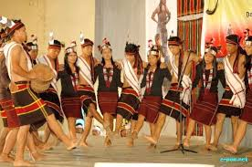

Exploring India's Culture and Heritage
Classical Dance Forms of India
Kuki dance** refers to the traditional folk dances of the Kuki tribe, an indigenous community found mainly in the northeastern states of India, especially in Manipur, Mizoram, Assam, and parts of Nagaland.
Kuki dance** refers to the traditional folk dances of the Kuki tribe, an indigenous community found mainly in the northeastern states of India, especially in Manipur, Mizoram, Assam, and parts of Nagaland. The Kuki people have a rich cultural heritage, and dance is an essential part of their community celebrations, particularly during festivals, harvests, and social gatherings. Their dances reflect tribal unity, rhythm, strength, and joy.
The Kuki people's dance traditions are ancient and deeply rooted in their tribal customs. Historically, dances were performed to celebrate victories in battle, to welcome guests, or during important rituals and festivals. One significant festival where Kuki dances are showcased is the Chavang Kut, the harvest festival celebrated with great enthusiasm. Over time, as the community transitioned from a warrior society to agrarian life, the focus of their dances shifted toward agricultural joy, community bonding, and cultural identity. Despite the changes, the core values and spirit of Kuki dance remain strong, preserving the tribe's legacy.
Today, Kuki dances are performed not only during tribal festivals but also in cultural showcases, competitions, and tourism events, promoting northeastern tribal heritage. Cultural preservation efforts are being made through educational programs, documentaries, and youth events, ensuring that the younger generation stays connected to their roots. These dances continue to be a source of pride and identity for the Kuki people, reflecting their resilience and cultural richness.
Dance holds a sacred and social significance in Kuki culture. It is a way to express gratitude to nature, honor ancestors, and celebrate life events like sowing and harvesting crops, weddings, and victories in war. Kuki dances also serve as a means to preserve oral traditions, as many songs and stories are passed down through performances. The dances symbolize courage, joy, and harmony within the community.